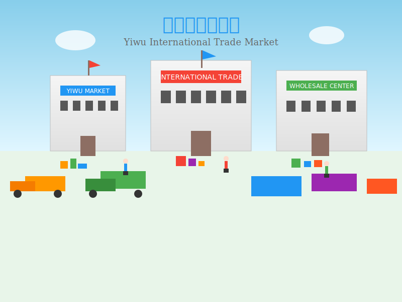

Discover the unique charm of the "World's Supermarket," experience the blend of tradition and modernity, and immerse yourself in multicultural fusion
Yiwu, known as the "World's Supermarket," is famous for hosting the world's largest small commodity distribution center. By 2025, Yiwu has developed into a highly internationalized commercial city, attracting foreign merchants from over 200 countries and regions who reside here permanently.
Yiwu boasts 6.4 million square meters of commercial area, 75,000 booths, 210,000 merchants, and operates over 2.1 million types of products. This is not only a shopping paradise but also an international metropolis that integrates diverse cultures.
Late August in Yiwu features a subtropical monsoon climate, with temperatures ranging from 25-33°C (77-91°F), moderate temperature differences between day and night, making it perfect for tourism activities. This is the end of summer, when Yiwu International Trade City and major attractions have relatively fewer tourists, making it an ideal time to experience this city.
For first-time international visitors, location, transportation convenience, and service quality are the most important considerations when choosing hotels. The following hotels are all located in downtown Yiwu or near the International Trade City, with convenient transportation and complete facilities, especially suitable for American guests.
Location: Located in Yiwu CBD core area, 188 Futian Road
Advantages: The first Marriott hotel in central Zhejiang region, international service standards that make American guests feel at home
Features: Staff fluent in Chinese and English, currency exchange services, complete accessibility facilities
Location: Located in Yiwu CBD World Trade Center, surrounded by International Trade City Districts 1-5
Advantages: Modern and stylish hotel design, providing the "It's the Hampton Way" brand philosophy
Features: Pet-friendly accommodation with pet services, which is relatively rare among Yiwu hotels
Location: Located at 158 Binwang Road, prime downtown location
Advantages: Excellent location with abundant nearby dining options, ideal for experiencing Yiwu city life
Features: Free public area WiFi, business center and meeting rooms available
Location: Located at 1197 Gongren North Road, opposite Gate 51 of International Trade City District 3
Advantages: Newly opened in 2025, brand new facilities, design combining Chinese and Western luxury styles
Features: High-quality goose down comforters, zero-pressure pillows, brand mattresses ensuring quality sleep
Location: Located at 300 Chengbei Road, downtown Yiwu area
Advantages: Reasonable prices, excellent location, ideal choice for business and tourism
Features: 24-hour front desk service, luggage storage and taxi calling services available
As an international commercial city, Yiwu's food culture is extremely diverse. Here you can find not only authentic Yiwu traditional cuisine but also specialties from around the world, forming a unique "Food United Nations" phenomenon.
Location: Located on Changchun Tenth Street, just steps away from International Trade City District 1
Recommended Dishes: Fotang Fried Chicken, Donghe Meat Pie, Fotang Thousand-Sheet Noodles and other Yiwu specialties
Features: Restaurant staff can provide basic English service, menu available in Chinese and English
Location: Located at 105 Binwang Commercial District Fourth Street
Recommended Dishes: Scallion Meat Pie (6 yuan/piece), Meat Pie with Egg (8 yuan/piece)
Features: Donghe Meat Pie has been listed as Yiwu Municipal Intangible Cultural Heritage
Location: "A Zhong Thousand-Sheet Noodles" at 37 Dacheng Road, Fotang Town
Recommended Dishes: Authentic Fotang Thousand-Sheet Noodles with delicious broth
Features: Smooth noodles, flavorful thousand-sheets, rich and fresh broth
Location: Located at 479 Chouzhou North Road, near International Trade City
Recommended Dishes: Spicy Lentil Soup, Turkish Salad, Pistachio Cheese Grilled Meat
Features: Restaurant decorated with Turkish style, staff can communicate fluently in English
Location: Located at 475 Chouzhou North Road, Choucheng Street
Recommended Dishes: Rice Pudding, Turkish Grilled Meat, Cheese Chicken Cutlet
Features: Generous portions, excellent value for money, suitable for sharing
Location: Located at 61 Huagong Road, elegant environment
Recommended Dishes: French Foie Gras, Porcini Mushroom Soup, Australian Wagyu Beef Steak
Features: Exquisite dishes, elegant environment, staff fluent in English service
Located in the Binwang Road area of downtown Yiwu, this district concentrates numerous international restaurants. Here you'll find restaurants from Turkey, India, Yemen, Syria, Afghanistan and many other countries, forming a unique "International Food United Nations" landscape.
Located in Jiangdong Street, Yiwu, this is the Korean community area. The streets are lined with Korean restaurants, cafes and supermarkets, offering the most authentic Korean cuisine at more affordable prices.
As the world's largest small commodity market, Trade City District 1 is a must-visit for international tourists. This area mainly deals in accessories, toys, and crafts, with rich varieties and affordable prices.
Practical Tips: The Trade City is huge, so wear comfortable shoes and plan your route in advance. The West Gate of District 1 is the main entrance where you can get free maps and shopping guide services.
Offers authentic Afghan cuisine such as Arabic flatbread, beef pancakes, and Afghan lamb rice. The restaurant environment is full of Middle Eastern style, and staff can communicate in English.
Practical Tips: To avoid waiting in line, you can contact hotel staff in advance to help make reservations.
District 4 mainly deals in socks, hats, bags, underwear, shoes, and daily necessities. District 5 is the imported goods hall and bedding, household items area.
Practical Tips: The Trade City starts closing around 5 PM, so plan your shopping time accordingly.
This is Yiwu's largest night market, bringing together food, clothing, accessories, bags, daily necessities and all kinds of goods. It's an excellent place to experience Yiwu's local atmosphere.
Practical Tips: The night market has large crowds, so keep your personal belongings safe. Around 8 PM is peak hours.
Jiming Pavilion is Yiwu's landmark building, known as the "Yellow Crane Tower of Central Zhejiang." The night lighting is spectacular, making it an excellent spot for photography.
Practical Tips: Lighting hours are 18:15-21:30. Climbing the pavilion offers a panoramic view of Yiwu, experiencing the prosperity and charm of this city.
Yiwu World is a highly designed shopping mall, called "Yiwu's Taikoo Li." It hides many photo spots. At the oone ccup entrance, you can take photos at the "Yiwu Wall," a great place for memorable pictures.
Alternative Plan: If you're not interested in Yiwu World, you can visit the nearby Piangyuan Clothing Market, which is similar to Hangzhou's Sijiqing or Guangzhou's Shisanhang.
You can choose to dine at Yiwu World, which has various styles of restaurants from Cantonese to Western cuisine. Or head to Fotang Ancient Town and dine within the ancient town, recommended to try Fotang Thousand-Sheet Noodles or other local specialties.
Fotang Ancient Town is one of Zhejiang's four major ancient towns, preserving 2,000 meters of Ming and Qing old streets, known as the "Thousand-year Ancient Town, Qingfeng Commercial Port, Buddhist Holy Land."
Core Attractions: Fotang Old Street, Wu Qiji Residence, Puchuan Water Street, Shuanglin Temple
Practical Tips: Fotang Ancient Town has free admission. It's recommended to wear photo-suitable clothing like qipao or hanfu to better blend with the ancient town atmosphere.
Every evening from 19:00-20:30, Fotang Ancient Town holds a light show. The best viewing position is at Wanlan Pavilion. Fuhu Bridge lights are colorful and photogenic from different angles.
Practical Tips: The light show is cancelled on rainy days, so check the weather forecast in advance.
The drive from Fotang Ancient Town back to downtown Yiwu takes about 20-30 minutes. Plan your return time in advance. If you need to catch a flight or high-speed train the next day, it's recommended to return to the city early to rest.
Practical Tips: From Fotang to the high-speed rail station/airport takes about 35 minutes without traffic, so allow sufficient time.
Yiwu, this city known as the "World's Supermarket," is attracting tourists from around the globe with its unique charm. Through this two-day itinerary, you will have the opportunity to deeply experience the multicultural diversity, rich cuisine, and commercial vitality of this city.
From the dazzling array of goods at the International Trade City to the ancient elegance of Fotang Ancient Town, from the bustling excitement of Binwang Night Market to the multicultural atmosphere of international cuisine streets, Yiwu showcases its unique charm as an international commercial city. Here, you can not only find the world's most abundant small commodities but also taste cuisine from around the world, experiencing the fusion and collision of different cultures.
We hope this itinerary can help you make full use of your time in Yiwu and create unforgettable travel memories. Whether you are a business traveler or leisure tourist, Yiwu will bring you a unique and exciting journey with its hospitality and unlimited business opportunities.
Finally, we wish you a pleasant journey and hope you discover your own world in Yiwu, this vibrant city!